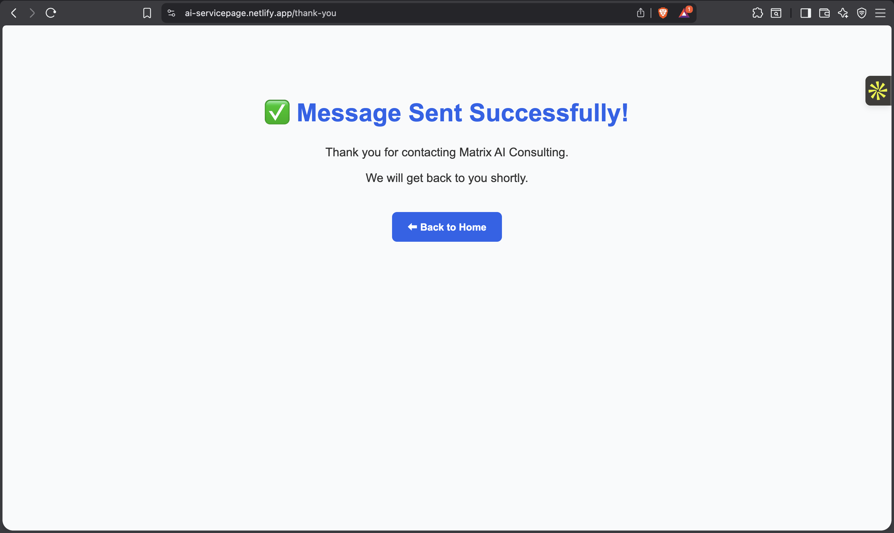
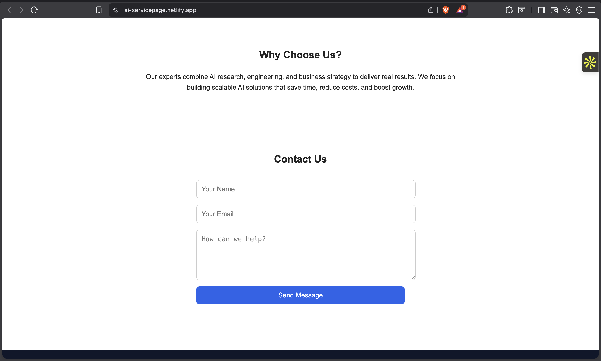

Codesnag • Cybersecurity Startup Mar 2025 – Jun 2025 • 3 Months
Converted Figma designs into responsive web interfaces
Built reusable UI components (Navbar, Hero, Cards, Buttons)
Implemented responsive layouts using CSS media queries
Worked with developers to maintain UI consistency
Focused on clean code, spacing, and visual hierarchy
📜 Internship Certificate
Click on the certificate to view full size
Virtual Software Engineering Intern (Backend)
JPMorgan Chase & Co. – Forage Virtual Experience Program
Duration: July 2025 – August 2025
Completed hands-on backend development tasks through simulated real-world projects
Worked on data processing and system design concepts
Gained practical experience in writing clean and structured code
Improved problem-solving and debugging skills through technical challenges
Projects
AI Services Landing Page – Matrix 360
Designed and developed a professional AI consulting services landing page
for an Open Developer Challenge, focused on modern UI, responsiveness,
and conversion-driven design.
Built a fully responsive AI services landing page from scratch
Structured content to highlight AI services, use cases, and value propositions
Applied UI/UX principles including spacing, typography, and visual hierarchy
Designed a smooth user flow from hero section to contact form
Integrated Netlify-powered contact form with validation
Ensured clean semantic HTML and performance-optimized layouts


Placement Project – Student Management System
Designed and developed a functional web-based Student Management System as part of placement preparation.
Implemented features such as student registration, record management, and profile updates
Focused on clean UI, proper form validation, and data handling
Strengthened backend logic, problem-solving, and overall project structure understanding
Netflix Clone (Frontend Project)
Created a visually appealing Netflix-inspired homepage using modern web technologies.
Replicated Netflix’s layout using HTML, CSS, and JavaScript
Built responsive sections like banners, movie lists, and hover animations
Enhanced understanding of layout design, flexbox, and UI/UX principles
Personal Portfolio Website
Developed a fully responsive personal portfolio website to showcase skills, projects, and achievements.
Structured pages for About, Skills, Projects, Resume, and Contact
Focused on clean typography, attractive visuals, and smooth navigation
Demonstrated practical knowledge of real-world web development and personal branding